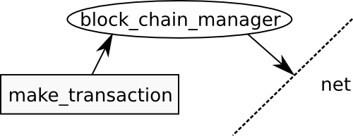
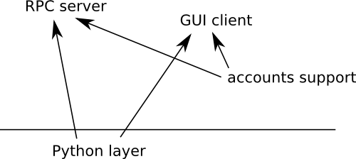

This is the inner core which consists of a bunch of subsystems co-operating over clearly defined interfaces.
As an example one such message could command the block_chain_manager to create a transaction. It then sends the new transaction to the network component to actualise it.

The inner core is very difficult to use so we abstract it's usage to a more usable outer core. Think of the inner core like X-windows and outer core an easy to use GUI toolkit like Qt (by analogy).

Into the core we can switch in and out different components. In this example we choose to replace a MySQL serialiser/de-serialiser with an SQLite one. Maybe there could also be in-memory serialisers (never store to disk) or whatever.
A serialiser takes in a data object and then stores it. The type of component decides where + how it looks when stored. When reading the object it de-serialises in reverse.
The whole point is not to just dump binary blobs into MySQL rows but to put them there in a readable format so an admin can dissect them in case of problems. We also will only create a MySQL serialiser for the time being unless it's possible to use standard SQL and simultaneously support MySQL, PostgresSQL, SQLite.
Above the diagram for the outer core indicated an exposed C api with auto-generated Swig bindings.
We try to keep the core very simple and focused; no mining, no accounts, no GUI, no RPC server. These things can all be implemented in Python. Already genjix has Spesmilo as a Qt GUI using bitcoind that we can easily use since it has a special interface that can be re-implemented for whatever Bitcoin implementation. Accounts can be provided as a Python module or special plugin in C or C++.

As another example, by being able to switch the networking component, we can replace it with a dummy networking component that is used for debugging.

Or use one networking component for multiple instances of Bitcoin or other currencies.
We try to split everything up as much as possible to help developers long term. It makes it easier for new contributors to get started. That's the free-software way: lots of components and clear separation to allow maintainers to work on their piece of turf.
A good plugin+component system is a must for this project. The core will probably have to be thread-safe if we use threads for networking. Otherwise an event system could be a bottleneck since we get the worst of both worlds.
If we make a block-chain verifier subsystem, is there an object to making it one-shot (verify once or every X blocks the block chain in one go) or does it need to be after every block is downloaded?
In any case, it would be nicer to be able to hook the verifier system to a generic callback as opposed to calling it manually in the code.
boost::signals2 seems like a good choice to be considered, although it has to be seen whether there is any bottleneck. Also any callback system would have to be exposed in Python somehow
Inside serialiser plugin:
class transaction:
// Return new transaction object de-serialised
static Transaction& read();
// Write current object to store
void write();